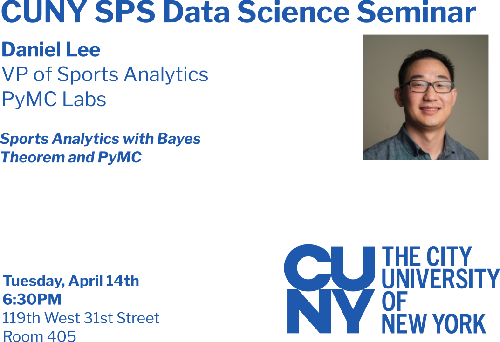
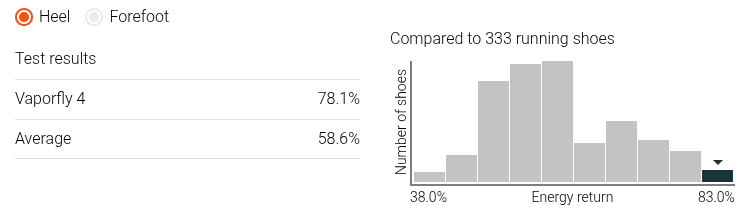
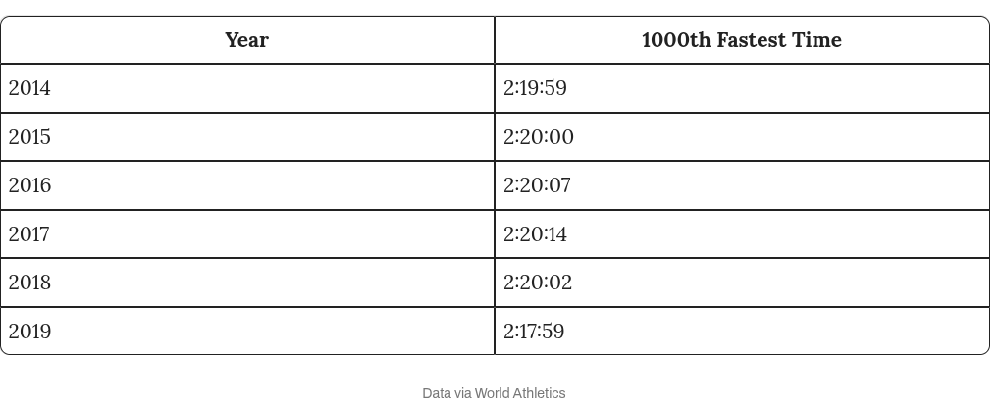
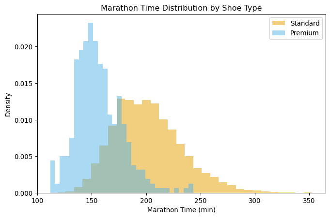
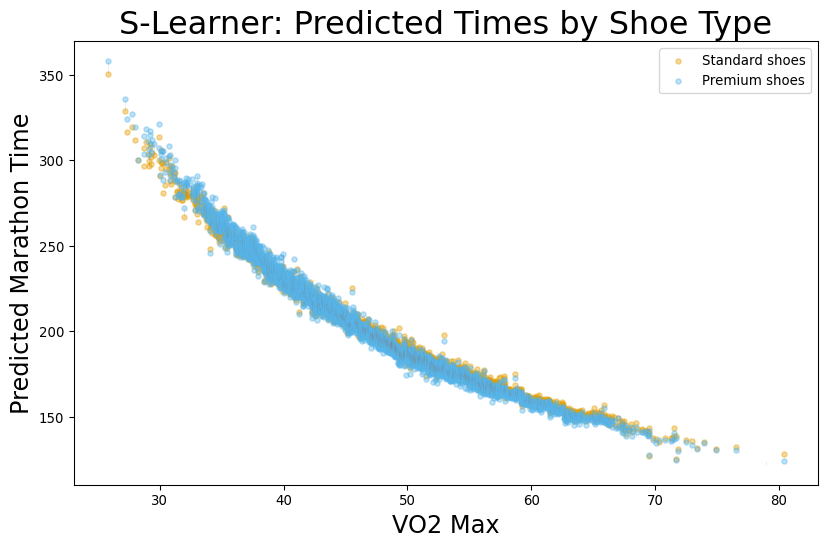
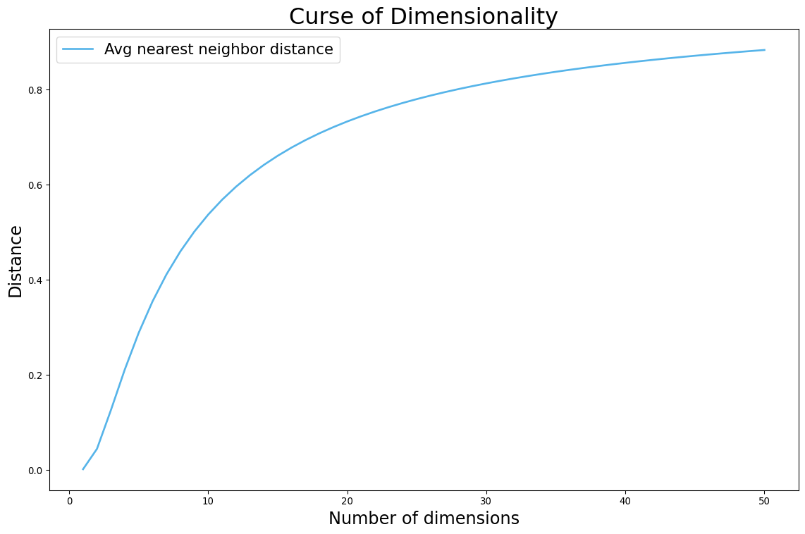
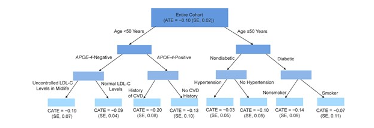
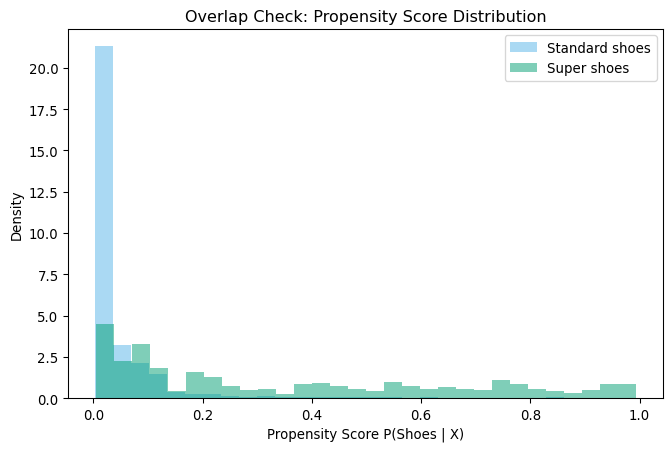
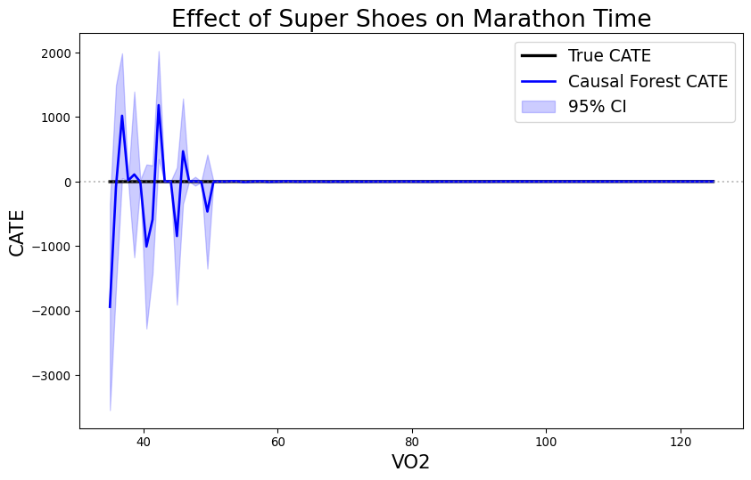
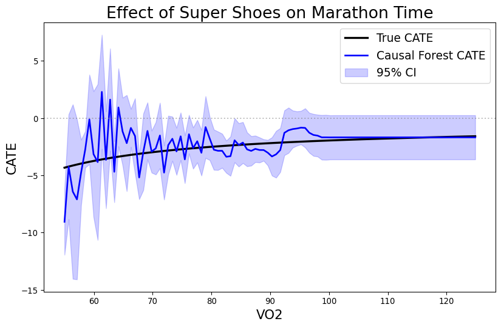

| Avg Race Time (min) | |
|---|---|
| Shoe Type | |
| Standard | 201.312713 |
| Premium | 156.169442 |
DATA 622 Meetup 10: Causal Inference
George I. Hagstrom
2026-03-30
Week Summary
- Lab 6 Available (Due April 19th at midnight)
- Spring Break begins
- MVP Demo Week of 19th
- Reading: ThinkCausal Tutorial
Tuesday April 14th Save the Date

Tuesdal April 14th Save the Date
- Daniel Lee
- VP Of Sports Analytics at PyMC Labs
- Sports Analytics
- Election Forecasting
- Probabilistic Programming
Super Shoes
- Recently, Running Shoe Technology Improved
Example: Super Shoes
- Recently, Running Shoe Technology Improved

Example: Super Shoes
- Elite Marathon times have fallen

How much do Super-Shoes Help?
- Optimistic CEO:
“Our super-shoes will save you almost 50 minutes off your marathon time”
- Why might this be wrong?
More Realistic Perspective
| time | shoes | age | miles | races | income | vo2 |
|---|---|---|---|---|---|---|
| 238.8 | 0 | 57.2 | 15.5 | 1.4 | 22049.9 | 39.1 |
| 183.4 | 0 | 37.9 | 24.4 | 2.4 | 42940 | 51.4 |
| 158.1 | 0 | 35.7 | 40.8 | 3.5 | 64041 | 62.8 |
| 216.1 | 0 | 49.8 | 11.6 | 0.2 | 33625.8 | 45 |
| 215.3 | 0 | 42.6 | 11.9 | 2.3 | 50662.6 | 41.7 |
| 217.9 | 0 | 55.3 | 16.8 | 4.1 | 50149.7 | 44.2 |
| 197.8 | 0 | 41.5 | 14.5 | 1.4 | 55151.7 | 47.5 |
| 191.6 | 0 | 37.3 | 13.8 | 2 | 52284.5 | 45 |
| 219 | 0 | 35.4 | 5 | 0.6 | 26935.9 | 42 |
| 220 | 0 | 42.1 | 5 | 0 | 36340.8 | 38.8 |
More Realistic Perspective

How about a Predictive Model?
- Fit an ‘xgboost’ model to the data
- Calculate Average Treatment Effect or ATE:
\[ \mathrm{ATE} = \sum_{i=1}^n \left(\hat{f}(\mathbf{x}_i,\mathrm{PShoe}=1) - \hat{f}(\mathbf{x}_i,\mathrm{PShoe}=0)\right) \]
- This is called an S-Learner
Predicted Model Results

Predicted Model Results
- Here the ‘xgboost’ method produces a result that is 50% smaller than true effect
| Method | ATE |
|---|---|
| True Effect | -2 |
| Naive Comparison | -45.1433 |
| XGBoost S-Learner | -1.1323 |
Causal Inference Offers a Better Way
| Method | ATE (min) | 95% CI Lower | 95% CI Upper |
|---|---|---|---|
| True Effect | -2 | nan | nan |
| Naive Comparison | -45.1433 | nan | nan |
| XGBoost S-Learner | -1.1323 | nan | nan |
| LinearDML | -2.26479 | -3.16081 | -1.36878 |
Potential Outcomes
- Suppose I am running NYC Marathon, and I decide to wear regular shoes
- I complete the marathon in 190 minutes
- How fast would I have gone if I had used the super shoes?
Fundamental Problem of Causal Inference
We will never observe the potential/counterfactual outcomes!
However, that won’t stop us from imagining that we have access to it when we are developing methods
Potential Outcomes
- Here, shoe choice is a treatment
- \(Y_1\) is outcome if given treatment
- \(Y_0\) is outcome if given control
| Runner | \(Y_0\) | \(Y_1\) | Effect |
|---|---|---|---|
| George | 190 | ||
| Juanita | 181 | ||
| David | 135 | ||
| Mary | 205 |
Potential Outcomes
- Here, shoe choice is a treatment
- \(Y_1\) is outcome if given treatment
- \(Y_0\) is outcome if given control
| Runner | \(Y_0\) | \(Y_1\) | Effect |
|---|---|---|---|
| George | 190 | 185 | -5 |
| Juanita | 184 | 181 | -3 |
| David | 137 | 135 | -2 |
| Mary | 205 | 199 | -6 |
Causal Estimands
- Average Treatment Effect (ATE) \[ \sum_{i=1}^n \frac{1}{n} \left(Y_{i1} - Y_{i0}\right) \]
| Runner | \(Y_0\) | \(Y_1\) | Effect |
|---|---|---|---|
| George | 190 | 185 | -5 |
| Juanita | 184 | 181 | -3 |
| David | 137 | 135 | -2 |
| Mary | 205 | 199 | -6 |
| ATE | -4 |
Causal Estimands
- Average Treatment Effect on the Treated (ATT) \[ \sum_{i\in \mathrm{Treated}} \frac{1}{n_T} \left(Y_{i1} - Y_{i0}\right) \]
| Runner | \(Y_0\) | \(Y_1\) | Effect |
|---|---|---|---|
| Juanita | 184 | 181 | -3 |
| David | 137 | 135 | -2 |
| ATT | -2.5 |
Causal Estimands
- Average Treatment Effect on Controls (ATC) \[ \sum_{i\in \mathrm{Treated}} \frac{1}{n_T} \left(Y_{i1} - Y_{i0}\right) \]
| Runner | \(Y_0\) | \(Y_1\) | Effect |
|---|---|---|---|
| George | 190 | 185 | -5 |
| Mary | 205 | 199 | -6 |
| ATC | -5.5 |
Treatment effect depends on person?
- Conditional Average Treatment Effect or CATE
\[ \mathrm{CATE}(\mathbf{X}) = E(Y_1 - Y_0 |\mathbf{X}) \]
| Runner | Pro? | \(Y_0\) | \(Y_1\) | Effect |
|---|---|---|---|---|
| George | No | 190 | 185 | -5 |
| Juanita | No | 184 | 181 | -3 |
| David | Yes | 137 | 135 | -2 |
| Mary | No | 205 | 199 | -6 |
| CATE | Yes | 137 | 135 | -2 |
| CATE | No | 193 | 188.3 | -4.6 |
Predictive versus Causal Questions
- Traditional ML estimates:
\[ \hat{f}(\mathbf{X}) = E(Y|\mathbf{X}) \]
- Causal Inference estimates:
\[ \hat{\mathrm{CATE}}(\mathbf{X}) = E(Y_1-Y_0|\mathbf{X}) \]
- In the first case, the data was generated naturally
- In the second, there was an intervention
Predictive versus Causal Questions
- Use Traditional ML when you are not intervening in the data generating process
- Fraud Detection
- Image Recognition
- Demand Forecasting
- Will customer default next month
- Customer Churn
Predictive versus Causal Questions
- Use Causal Inference when you are intervening
- Will our drug increase survival?
- Will demand rise if we offer a sale?
- If we increase credit limits, will our profits increase?
- Will this customer churn if I offer a 25% discount?
Predictive versus Causal Questions:
- Predictive:
- What is going to happen next?
- What class is this observation?
- Causal:
- What will happen if if I do X
Beyond Linear Regression
- In Linear Regression part of coursse, we had to control for confounders to make causal conclusions
Problem 1: Many relationships are nonlinear
- Solution: Try to match data points with opposite values of treatment
- IE Find a pair of runners with similar age, VO2, training history, but who used different shoes
- Find difference of pairs
Beyond Linear Regression
Problem 2: Matching doesn’t work with many features

Propensity Score
Rubens and Rosenbaum: Instead of matching on exact characteristics, we can match on probability of getting the treatment.
Propensity Score
- Fit logistic regression to predict probability of having premium shoes
- Stratify by this propensity score
- Add as covariate, matching, inverse probability weighting, more
- Compute ATE
Causal Machine Learning
- What if we use ML both to model outcome (running time) and treatment (odds of wearing shoe)?
- Build two models:
- \(f_T(\mathbf{W})\) predicts treatment
- \(f_Y(\mathbf{W})\) predicts outcome
- Treatment effect is relationship between residuals of these two models
CATE
Suppose that we want to know how the shoes impact runners of different speed: \[ \mathrm{CATE}(\mathrm{VO2}) = E(\mathrm{Time}_1 - \mathrm{Time}_0 | \mathrm{VO2}) \]
Now add another ML model in final stage
Build three models:
- \(\hat{f}_T(\mathbf{W},\mathbf{X})\) predicts treatment
- \(\hat{f}_Y(\mathbf{W},\mathbf{X})\) predicts outcome
- \(\hat{f}_\tau(\mathbf{X})\) predicts treatment effect
Causal Forest
- Causal Forest make splits of final tree to maximize CATE heterogeneity

Jawedar et al. AJE 2023
Requirements for Causal Inference
- You have all confounders in your model
- This requires your domain knowledge
- No guarantees
- Model will be silently wrong
Requirements for Causal Inference
- Overlap Criterion
- For each value of confounders, there is non-zero chance of either treatment class
- Model won’t tell about regions where this isn’t true

Impact of Overlap on CATE

Impact of Overlap on CATE

Requirements for Causal Inference
- No post-treatment variables
- If the variable could have been impacted by the treatment, you cannot use it
Continuous Treatments
- Grams of carbs before race
- Loan Interest or Amount
- Sale Price
Continuous Treatments
- Disrete treatment defined effect as difference
- For continuous it is the derivative
\[ \mathrm{CATE}(t) = \tau(t) = \frac{\partial E(Y(t)|X)}{\partial t} \]
- Causal Forest estimates slope on each leaf wrt to treatment
Continuous Overlap
- Regression instead of classification to predict treatment dosage
- Overlap Criterion: \(R^2\) of nuisance model for treatment less than say 0.95

DATA 622